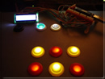
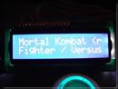
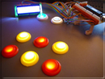
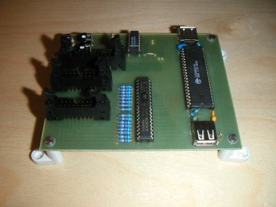
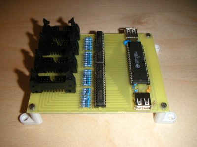
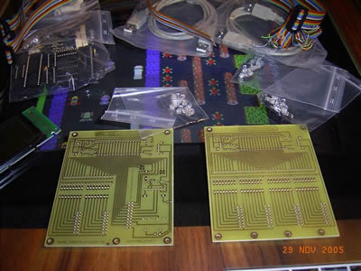

MaLa Hardware



MaLa Hardware enables you to connect an LCD (from 1×16 up to 4×40 characters) and up to 64 LEDs to your cabinet. The LCD can display game information and LEDs can light your buttons — controlled by game data. Connects via USB.
Available Configurations
- LCD + 16 LEDs (1 board)
- 32 LEDs (1 board)
- LCD + 48 LEDs (2 boards)
- 64 LEDs (2 boards)
Pictures

LCD / 16 LED Version

32 LED Version

Assembly Kit
Videos
MaLa Hardware in action on Win98SE (PIII 650MHz) — Xvid AVI format:
- Selecting games
- Attract mode
- Massive attract mode — 6 Joysticks, 1 Spinner, 1 Trackball, 47 Buttons
Ultimarc PacDrive
The PacDrive by Ultimarc is a USB LED controller that is natively supported by MaLa. Connect up to 16 LEDs to light your cabinet buttons — controlled by game data just like the MaLa Hardware LEDs.
Ultimarc PacDrive
USB LED controller — 16 outputs, native MaLa support, no plugin required.
Other Hardware via Plugins
Additional hardware is supported through the MaLa plugin system, including:
- LEDWiz — GGG LED controller with RGB support via the LedWiz plugin
- LEDBlinky — Advanced LED control for LEDWiz and PacDrive via the LEDBlinky plugin
- UltraStik 360 — Programmable joystick, auto-switches between 8-way, 4-way and 2-way per game
- Serial LCD displays — BetaBrite and serial LCD support via the Serial Display plugin
- RotateScreen — Auto-rotate your monitor when MaLa switches orientation
See the Plugins page for all available hardware plugins.
IOWarrior SDK
The MaLa Hardware is based on the IOWarrior chip by Code Mercenaries. Use this SDK to support MaLa Hardware in your own applications. Available for Windows, MacOS, Linux and Java.
IOWarrior SDK Download Page
Official SDK download page — Code Mercenaries.